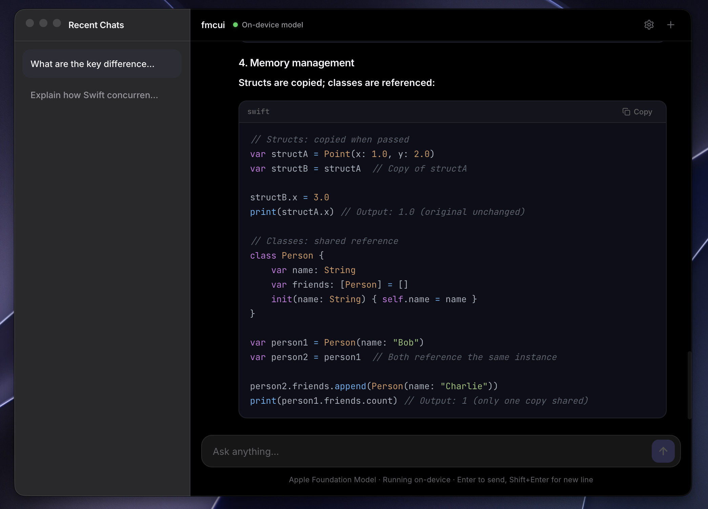

A beautiful, highly-performant chat interface built specifically to interact with Apple Foundation Models running locally on your device.

Built for the modern Apple ecosystem with speed and privacy in mind.
No data leaves your machine. Your chats with the foundation model run entirely on-device using the Apple Foundation Models Serve endpoint.
Designed to blend seamlessly with macOS Golden Gate, using translucent window treatments, vibrant sidebars, and native window controls.
Optimized streaming architecture means you see tokens as they are generated with virtually zero latency, utilizing the Apple Silicon Neural Engine.
No terminal required for end-users. Just a standard macOS app.
Go to the GitHub Releases page and download the .dmg file for your architecture.
Double-click the downloaded fmcui-xxx.dmg file to mount it. Drag the fmcui app icon into the Applications folder shortcut right next to it.
Because the app is open-source and not signed by a paid Apple Developer account, macOS might say the app is "damaged". To fix this, open your Terminal and run:
Open fmcui from your Applications folder or Spotlight. (Note: You must be running macOS 27 Golden Gate or later for the foundation models to be available).